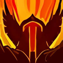

Guerrier Fureur
+3,9 % de DPS
+3,9 % de DPS
Patch de la bêta du 2 octobre 2026
Sanguinaire (Bloodthirst) — ratio de puissance d'attaque
35 %→45 %
Rage des coups critiques rage rendue par un critique
75 %→100 %
Simulation niveau 60avantaprès
Guerrier Fureur497,9 → 517,4+3,9 %
Guerrier Armes490,3 → 494,8+0,9 %